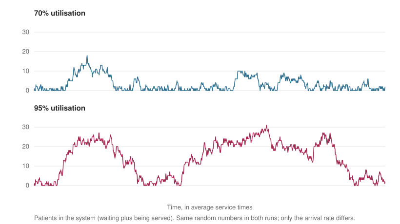
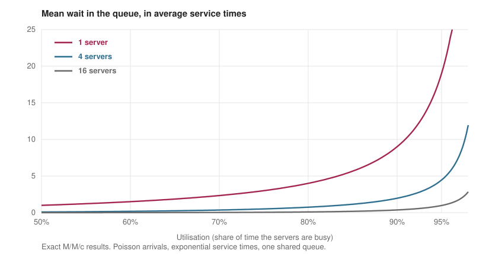

Why does the waiting room fill up long before the hospital is full?
A department that is busy 85% of the time sounds comfortable, with one hour in seven to spare. Yet its waiting room can be full for hours at a time. This is not bad management or bad luck. It is arithmetic, and it comes from queueing theory, one of the oldest parts of operations research. This post builds the key results from the simplest case upwards, shows each one in numbers and in a simulation, and ends with why they matter for the emergency department simulator, EDSim, that I work on with the DENOS Lab at the University of Calgary.
1. The simplest queue
Suppose patients arrive at random at an average rate of λ per hour, and a single doctor treats them one at a time at an average rate of μ per hour. The fraction of time the doctor is busy is the utilisation, ρ = λ/μ. If arrivals are random in the usual sense (a Poisson process) and treatment times are exponentially distributed, then the average time a patient spends waiting before treatment starts is ρ/(1 − ρ) average treatment times. This is the M/M/1 queue, and the formula is one of the most useful in the subject.
The formula is gentle at low load and merciless near full load. At 50% utilisation, a patient waits one treatment time on average. At 80% they wait four, at 90% nine and at 95% nineteen. If a treatment takes 20 minutes, the average wait at 90% utilisation is three hours. Table 1 shows how quickly the wait runs away.
| Utilisation | 50% | 70% | 80% | 90% | 95% | 99% |
|---|---|---|---|---|---|---|
| Mean wait, in treatment times | 1.0 | 2.3 | 4.0 | 9.0 | 19.0 | 99.0 |
The reason is that a queue drains at a rate equal to the spare capacity, μ − λ. When utilisation is high, the spare capacity is small, so a burst of arrivals that happens to come together takes a very long time to clear, and meanwhile the next burst arrives. I checked the formula by simulating two million patients. At 50%, 80% and 90% utilisation the simulated average waits were 1.01, 3.99 and 9.05 treatment times, against the formula’s 1.0, 4.0 and 9.0. At 95% the simulation gave 19.9 against 19.0, a gap of about 5% that comes from noise, because a queue that rarely empties takes far longer to average out.
2. What a busy queue looks like
Averages hide how a queue behaves in time. Figure 1 shows the number of patients in the system over the same stretch of time at two utilisations. Both runs use the same random numbers, so the only difference is that arrivals come faster in the second one. At 70% utilisation the queue peaks at 18 patients and the system is empty 29% of the time. At 95% the same randomness gives a peak of 31, ten or more patients are inside for two-thirds of the period, and the system is empty only 6% of the time. The longest unbroken busy stretch is 86 treatment times at 70% and 296 at 95%. Nothing about the arrivals changed except their average rate.

3. Variability: the second ingredient
The M/M/1 formula assumes a particular amount of randomness. Real departments have more. A sprained ankle takes minutes and a resuscitation takes hours, so treatment times vary far more than the exponential distribution assumes. Kingman’s approximation, from 1961, handles this by multiplying the wait by a variability factor. For a single server the mean wait is about
ρ/(1 − ρ) × (ca² + cs²)/2 × (average treatment time),
where ca² and cs² measure how variable the gaps between arrivals and the treatment times are, and both equal 1 for the M/M/1 queue. The formula is sometimes remembered as VUT, for variability, utilisation and time. As an illustration, suppose arrivals are random but treatment times have a coefficient of variation of 1.5, so cs² = 2.25. The factor becomes (1 + 2.25)/2 = 1.625, so every wait is 62.5% longer than the M/M/1 prediction, at any utilisation. Variability is capacity that you cannot see on a staffing chart but that patients feel in the waiting room.
4. Why bigger pools wait less
Now give the department several doctors sharing one queue. The standard result, due to Agner Erlang, gives the probability that an arriving patient must wait and the resulting mean wait. The effect is large. Hold utilisation at 80% and add servers. With one server the mean wait is 4.0 treatment times and 80% of patients wait. With 5 servers the mean wait is 0.55 and 55% of patients wait. With 10 servers it is 0.205 and 41%, with 20 it is 0.064 and 26%, and with 50 it is 0.009 and 9%. Figure 2 shows the wider picture: with more servers, the curve stays flat until much closer to full utilisation.

The reason is pooling. With several servers, a patient waits only if every server is busy, and idle capacity is used by whoever is waiting. A result of Shlomo Halfin and Ward Whitt in 1981 turned this into a staffing rule: staffing a little above the offered load a, by a margin proportional to the square root of a, keeps the chance of waiting roughly constant as the system grows. Large pools can therefore run at higher utilisation for the same quality of service. The caveat is that pooling assumes interchangeable servers, and in a hospital doctors, nurses and beds are not.
5. Little’s law and the boarding problem
One of the most general results in the subject is Little’s law, proved by John Little in 1961. In any stable system, the average number of patients inside equals the arrival rate times the average time each spends there, L = λW. If 10 patients arrive each hour and each stays four hours on average, then on average 40 are in the department. It holds with no assumption about the distribution of arrivals or treatment times, which is why it is used everywhere.
It also explains boarding. When an admitted patient waits in the emergency department for a ward bed, they keep using a space, which makes the effective treatment time longer, which raises utilisation. By Section 1, a rise in utilisation near the limit produces a much larger rise in waiting. The behaviour I see in EDSim is of this kind. In surge experiments over 326 simulated visits, a 60% increase in arrival rate raised mean length of stay by 75.4%, from 552 to 968 minutes. A queueing model cannot predict those numbers, which depend on the details of the department, but it explains why a response larger than the change in demand is to be expected.
6. Triage changes who waits
Emergency departments are not first-come first-served. Patients are triaged and the most urgent are seen first, which makes the queue a priority queue. In 1954 Alan Cobham worked out the waits for such a queue. The wait of the most urgent class depends only on that class’s own load and on the time left in whoever is already being treated, so urgent patients are protected from growth in routine arrivals. There is a price, which Leonard Kleinrock’s conservation law makes precise: for rules that never leave a server idle while someone waits, a weighted average of the waits across classes does not change. Priority can shift waiting from one group to another, but it cannot remove it.
7. What operations research does with this
The practical question is how many servers to employ, and the answer is a trade-off. Each extra person has a cost, and each extra minute of waiting has a cost, and the best staffing level balances them. This has the same shape as the newsvendor problem in my post on supply chains: too little capacity and you pay for waiting, too much and you pay for idle staff. In practice a department often picks a service target, such as seeing a given share of patients within a set time, and finds the smallest staffing level that meets it. Seen this way, 100% utilisation is not a goal but a failure mode, and slack is the thing being bought.
When the assumptions fail, with arrival rates that change during the day, several kinds of resource and priority classes, the formulas stop being exact and the usual tool is a discrete-event simulation. EDSim is one, with language-model agents playing the patients, nurses and physicians in place of hand-written rules. The formulas still earn their place as a sanity check. If a simulated department does not show waits that blow up as it approaches full capacity, something in the simulator is wrong.
8. The code
The first block holds the formulas. erlang_c gives the chance of waiting with c servers, mean_wait turns it into a mean wait in treatment times, and kingman is the single-server approximation with variability.
def erlang_c(c, a):
"""Probability that an arriving patient has to wait, with c servers and offered load a = lambda/mu."""
top = a**c / math.factorial(c) / (1 - a / c)
return top / (sum(a**k / math.factorial(k) for k in range(c)) + top)
def mean_wait(c, rho):
"""Mean time in the queue, measured in average service times (M/M/c)."""
a = c * rho
return erlang_c(c, a) / (c - a)
def kingman(rho, ca2, cs2):
"""Kingman's approximation for one server: wait in service times, with squared variation of arrivals and services."""
return rho / (1 - rho) * (ca2 + cs2) / 2
The second block simulates the single-server queue. Each patient starts treatment when they arrive or when the previous patient finishes, whichever is later, so one pass through the patients is enough. number_in_system counts, at any time, how many have arrived and not yet left, which is what Figure 1 plots.
def simulate(rho, n, rng):
"""One server, Poisson arrivals, exponential service of mean 1. Returns arrival, start and departure times."""
arrive = np.cumsum(rng.exponential(1 / rho, n))
serve = rng.exponential(1.0, n)
depart = np.empty(n)
prev = 0.0
for i in range(n): # each patient starts when they arrive or when the server frees up
prev = max(arrive[i], prev) + serve[i]
depart[i] = prev
return arrive, depart - serve, depart
def number_in_system(arrive, depart, times):
return np.searchsorted(arrive, times, side="right") - np.searchsorted(depart, times, side="right")
What to take away
Waiting grows faster than load, and the nearer a system is to full utilisation the faster it grows. Variability adds to waiting at every level of load, and pooling servers reduces it. Little’s law links the number of people inside a system to the time they spend there, and priority rules can move waiting around but not remove it. For a designer the lesson is to plan for slack and to measure variability as carefully as averages. For a simulator the lesson is that these results are a check that does not need a hospital.
Further reading
Erlang, A. K. (1917). Solution of some problems in the theory of probabilities of significance in automatic telephone exchanges. Elektroteknikeren, 13, 5–13.
Cobham, A. (1954). Priority assignment in waiting line problems. Journal of the Operations Research Society of America, 2(1), 70–76.
Kingman, J. F. C. (1961). The single server queue in heavy traffic. Mathematical Proceedings of the Cambridge Philosophical Society, 57(4), 902–904.
Little, J. D. C. (1961). A proof for the queuing formula: L = λW. Operations Research, 9(3), 383–387.
Kleinrock, L. (1965). A conservation law for a wide class of queueing disciplines. Naval Research Logistics Quarterly, 12(2), 181–192.
Halfin, S. and Whitt, W. (1981). Heavy-traffic limits for queues with many exponential servers. Operations Research, 29(3), 567–588.
Green, L. V. (2006). Queueing analysis in healthcare. In R. W. Hall (ed.), Patient Flow: Reducing Delay in Healthcare Delivery. Springer.
Gross, D., Shortle, J. F., Thompson, J. M. and Harris, C. M. (2008). Fundamentals of Queueing Theory, 4th edition. Wiley.
Hopp, W. J. and Spearman, M. L. (2008). Factory Physics, 3rd edition. McGraw-Hill.
Appendix: credits
Figures 1 and 2 and every number in the tables and text are computed by the code on this page. The 20-minute treatment and the coefficient of variation of 1.5 are illustrative values, not measurements from any hospital. The EDSim figures are from my own work and describe a simulation, not a real department.